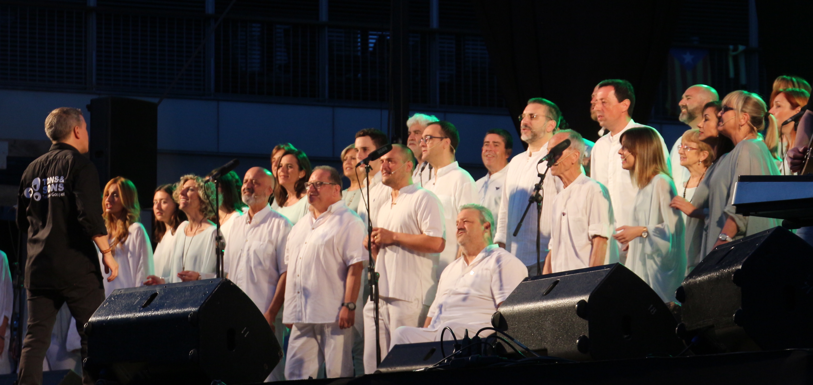
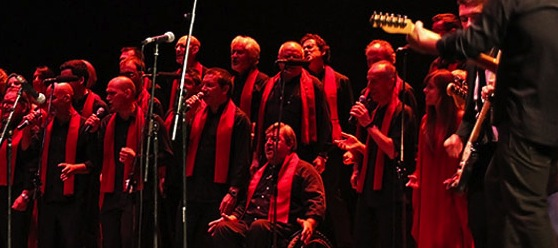
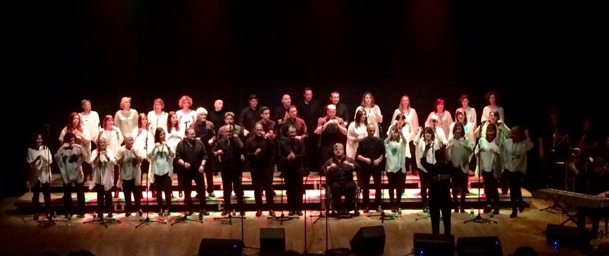

SONS DE GOSPEL
selecció de temes de gospel clàssic i modern, interpretats amb piano o amb banda completa.
ROCKSPEL
Espectacle mixt amb temes gospel i també temes de rock (Beatles, U2, Queen, Bob Marley, Jackson 5, entre d'altres) harmonitzat per a coral de gospel i acompanyats per la nostra banda.
TRIBUT A QUEEN
espectacle basat en una selecció de temes de la banda britànica Queen, amb arranjaments propis per a la nostra coral, i amb acompanyament de la nostra banda.
Si t'interessa saber més detalls sobre cadascun dels nostres repertoris, no dubtis a contactar amb nosaltres.